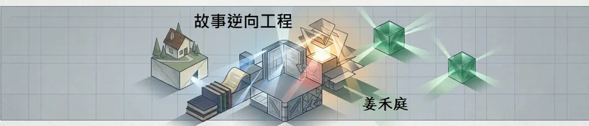
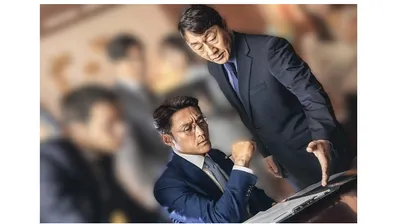
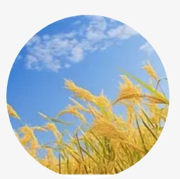

故事逆向工程

朴武振的「好人得勝」，真的只是正義必然嗎？ 身為政治素人的他，在一次次政治危機中做出選擇。 但回頭看，他的勝利究竟來自自己，還是早已有人替他安排好了方向？

第一季的朴武振，在恐攻與政治算計中被推上總統位置；但如果他不再是「被指定」的倖存者，而是靠自己走進權力核心，他還能守住原本的原則嗎？ 當政治成果與信念衝突，他會如何抉擇？如果是你，你會怎麼選？

姜禾庭
我喜歡看影劇小說，也喜歡從劇情與角色中整理自己的想法。